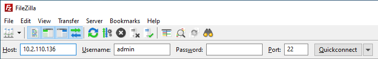
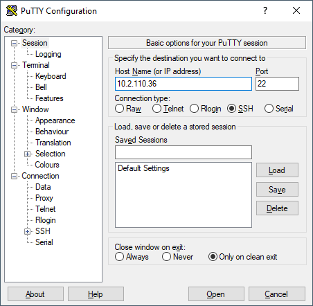

Part 6: Calling and Debugging a Shared Library with Visual Studio Code and NI Linux Real-Time¶
Table of Contents
Introduction¶
In addition to creating standalone applications and custom user libraries, the NI Linux Real-Time GNU C/C++ toolchain allows the use of external libraries in applications or code. This tutorial walks through creating a C application to call and debug the shared library created in Building a Shared Library with Visual Studio Code and NI Linux Real-Time. Note that with the proper adjustments, this process can be applied to any shared library.
Requirements¶
This tutorial requires the following software and hardware:
A development PC configured as described in Configuring a Development System with Visual Studio Code
A project template as described in Configuring Visual Studio Code for Building NI Linux Real-Time C/C++ Code
The shared library and header file created in Building a Shared Library with Visual Studio Code and NI Linux Real-Time.
(Optional) A Linux Real-Time System (e.g., PXI or CompactRIO) with SSH access enabled for deployment and debugging. The versions of software installed on this device should match the toolchain version used.
Configuring the Sysroot¶
For this tutorial the shared library will be dynamically linked. That is, the library will remain external to the application but will be loaded at run time by the final executable. For this to work the linker must be able to find the library and the library must be in the same location it will be on the deployed system. If the executable is unable to locate the shared library at run time, it will not be able to run properly without further configuration changes.
The following are standard Linux directory locations for shared libraries:
/lib/ - location for essential Linux OS libraries
/usr/lib/ - location for normal user mode libraries installed by the OS package manager
/usr/local/lib/ - location for normal user mode libraries installed from source or manually
In this tutorial the shared library is deployed manually and will be placed in the /usr/local/lib/ directory. Since this tutorial is aimed at a cross compile workflow, it’s not enough to simply place the shared library in this location at deployment time. The library must be in that same location both in the local sysroot and in the deployed system. If this is not the case, the linker will either not be able to link the shared library or will look for the shared library in the incorrect location. This applies to third-party libraries that are installed on the deployment system from the opkg package manager as well, and these will need copied to the local sysroot to successfully use.
To add the shared library to the sysroot, follow the steps below. The shared library will later be deployed to the remote system at the same time as the built executable.
- In a Windows Explorer window, navigate to the shared library to be used.
- Right-click on the shared library and select Copy from the context menu.
Navigate to the local copy of the sysroot for the NI Linux Real-Time GNU C/C++ Compiler that the executable will be built with. The sysroot will be included in the files installed with the NI Linux Real-Time GNU C/C++ Compiler and is contained in the directory the toolchain was installed to.
For x64 NI Linux Real-Time devices, this should be <toolchain root path>/sysroots/core2-64-nilrt-linux/usr/local/lib.
For ARMv7 NI Linux Real-Time devices, this should be <toolchain root path>/sysroots/ cortexa9-vfpv3-nilrt-linux-gnueabi/usr/local/lib.
- Paste the shared library in the sysroot directory by right-clicking anywhere in the directory and selecting Paste from the context menu.
- Repeat steps 1 through 4 above with the header file for the shared library, placing it in the <toolchain root path>/sysroots/core2-64-nilrt-linux/usr/local/include or <toolchain root path>/sysroots/ cortexa9-vfpv3-nilrt-linux-gnueabi/usr/local/include directory depending on the toolchain used.Note: The /usr/local/include directory may not exist in the sysroot by default. If it is not present, simply create the directory.
Creating a Project¶
This tutorial assumes that a template project for ARMv7 or x64 NI Linux Real-Time Targets has been created as detailed in Configuring Visual Studio Code for Building NI Linux Real-Time C/C++ Code. With a template created as described there, the following steps can be taken to create a new project:
Create a new directory to serve as the top-level project directory.
- Copy the contents of the template project directory into this newly created directory.
Open the folder in Visual Studio Code by doing one of the following:
- Right-click anywhere in the folder and select Open with Code.
- Launch Visual Studio Code, then select File >> Open Folder and choose the folder to open.

- Confirm that the folder opened properly in Visual Studio Code in the Explorer.
In the .vscode directory of the project, open c_cpp_properties.json.
- Add the /usr/local/include directory from the Configuring the Sysroot portion of this document to the includePath to ensure includes in that directory are found by IntelliSense.
Creating the C Source Code¶
To test the library, a simple C application will be used to call a function from that library. The example library only has one function, so this is straight forward.
In the src directory of the project, create a new source file titled callingSharedLibary.c.
Complete the source file as shown below.
#include <stdio.h> #include <stdlib.h> #include <myLib.h> int main(void) { int x, y, z; puts("Enter the first number to add:"); scanf("%d", &x); puts("Enter the second number to add:"); scanf("%d", &y); z = add(x, y); printf("%d + %d = %d\n", x, y, z); return EXIT_SUCCESS; }
Save callingSharedLibrary.c.
Deploying and Running the Compiled Executable¶
For the built executable binary to run properly, the shared library and executable must both be deployed and given execute permissions. The steps required to accomplish this using FileZilla are below, but any method of copying the files to the correct location and changing the permissions can be used.
- Ensure that SSH is enabled on the Linux Real-Time system. For systems using *.ipk-based installations such as PXI Linux Real-Time devices, this will be enabled by default once a System Image is installed. For other Linux Real-Time systems, SSH can be enabled in NI MAX in the System Settings for the device.

Launch FileZilla.
- In FileZilla, connect to the Linux Real-Time target using the IP Address or Hostname, admin account, and Port 22. Click Quickconnect to open the connection.
- In the Remote site, ensure that the directory location is /home/admin. Create a new directory for the binary deployment with a descriptive name (e.g., callingSharedLibrary/).

Open the new directory in the Remote site side of FileZilla.
- On the Local site side, navigate to the location of the executable binary to be deployed.
- Copy the binary by double-clicking it in the local file system view. A copy should now appear in the remote file system.
- By default, the file will not have any execute permissions defined and will not be executable. This can be fixed by right-clicking the remote copy of the file and selecting the File permissions… item from the context menu or directly from a shell using the chmod command.
Repeat steps 1-9 to deploy the shared library to the /usr/local/lib directory on the remote system. Ensure that it has the same execute permissions as the executable. The executable will not run properly if this step is skipped.
Close FileZilla.
Open PuTTY.
- Select a Connection type of SSH and enter the Host Name (or IP Address) of the target. Confirm that the Port field is set to 22 and then click Open.
- Log into the target as the admin user.
- Change directories to the location of the deployed binary.
- Run the executable and confirm that it works properly. Make sure to enter input when prompted by the application.
Debugging Remotely with GDB¶
Debugging remotely with Visual Studio Code will allow debugging of both the shared object and the executable using the GNU Debugger. NI includes gdbserver on NI Linux Real-Time targets by default, while the NI Linux Real-Time GNU C/C++ toolchain includes the GNU Debugger to connect to the remote system.
Visual Studio Code allows configurations for remote debugging through the properties set in the launch.json file for a given project. In this file, the remote target, gdbserver port, and executable to be debugged are defined before launching a connection to the remote debug server.
Configuring launch.json¶
The launch.json file contains the information necessary to allow Visual Studio Code to use a debugger such as the GNU Debugger (gdb). For more information on launch configurations and debugging in Visual Studio Code, refer to Configuring C/C++ debugging.
In Visual Studio Code, open the <project folder>/.vscode/launch.json file. This file should have some information such as the miDebuggerPath completed already as part of the template project creation.
Complete launch.json for the “Hello, World!” application as shown below. Specifically, the program and miDebuggerServerAddress fields using the IP address of the remote NI Linux Real-Time device and the local binary build.
{ // Use IntelliSense to learn about possible attributes. // Hover to view descriptions of existing attributes. // For more information, visit: https://go.microsoft.com/fwlink/?linkid=830387 "version": "0.2.0", "configurations": [ { "name": "x64 (gdb) Launch", "type": "cppdbg", "request": "launch", "program": "${workspaceFolder}/build/bin/callingSharedObject", "args": [], "stopAtEntry": false, "cwd": ".", "environment": [], "showDisplayString": true, "MIMode": "gdb", "miDebuggerPath": "C:/build/18.0/x64/sysroots/i686-nilrtsdkmingw32/usr/bin/x86_64-nilrt-linux/x86_64-nilrt-linux-gdb.exe", "miDebuggerServerAddress": "10.2.110.136:9092" } ] }
(Optional) To debug the shared library as well, the debugger will need access to the source files for that library. Note that GDB will look for the source files for the shared library at the location they were located on the development machine when the shared library was built. If these files have moved, the sourceFileMap option can be configured in launch.json to redirect the debugger to the correct file locations.
Save launch.json
Debugging the Remote Executable and Shared Library¶
Debugging the executable on the remote system requires launching gdbserver with the executable at the port specified in launch.json then run the launch profile defined in Visual Studio Code to connect the debugger. Once the debugger is connected, standard debugging tools such as breakpoints are available.
If not already connected to the remote NI Linux Real-Time device, open PuTTY and connect via SSH.
- Change directories to the location of the debuggable binary.

- Launch gdbserver at the port defined in launch.json. This should result in gdbserver listening for any connections from a gdb connection at that port.
In Visual Studio Code, open callingSharedObject.c in the editor.
- Switch to the Debug view by clicking the Debug icon.
- In the Debug view, ensure that the launch configuration defined is selected as the configuration.

- In the callingSharedObject.c source file, click to the left of the function from the shared library to place a breakpoint and pause execution at that point.
- Connect to the remote gdbserver by clicking the Start Debugging button.
- Confirm that the program is now running in the SSH terminal window. Interact with the program to progress to the breakpoint. Confirm that the debugging view in Visual Studio Code now shows execution stopped at that point.

- Use the debugging tools in Visual Studio Code to debug the application and shared library. In particular, try stepping into the shared library function to debug the library call.

- Complete execution of the program by click the Continue button or hitting F5. Note the exit status of the application in both the Debug Console in Visual Studio Code and the SSH Session.
Note: While debugging, not all symbols or source files for the Linux Kernel are available. If an attempt to step into that code is made, Visual Studio Code may be unable to open or find that certain source files. If this occurs, finish debugging with either Continue or Stop.